The fact that Stanard used the simulation method consistent with the BF emergence pattern […] suggests that actuaries may be more comfortable with the BF emergence assumptions than with those of the chain ladder. Or perhaps it just means that no one would be likely to think of simulating losses by the chain ladder method.
# install official release
install.packages("imaginator")
#install beta
devtools::install_github("PirateGrunt/imaginator")library(imaginator)pois5 <- PoissonHelper(5)
pois10 <- PoissonHelper(10)
class(pois10)
## [1] "function"library(ggplot2)
set.seed(1234)
dfClaims <- rbind(data.frame(Group = "A", Claims = pois5(500))
, data.frame(Group = "B", Claims = pois10(500)))
plt <- ggplot(dfClaims, aes(Claims, fill = Group))
plt <- plt + geom_histogram(
binwidth = 1, color = "black", alpha = 0.8, position = "identity"
)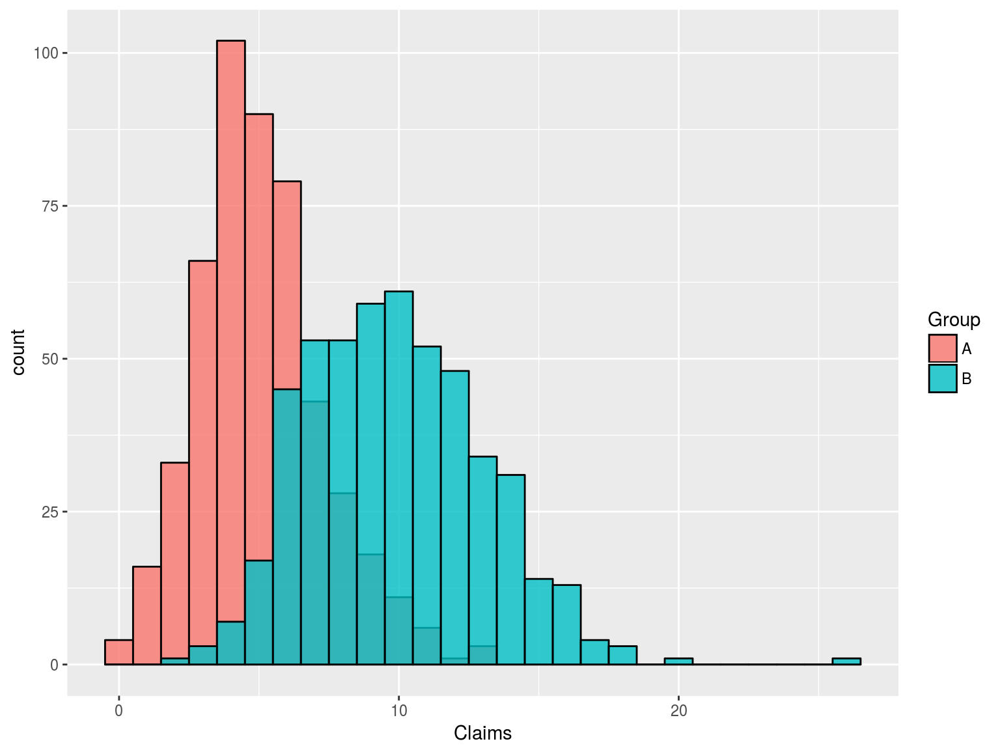
Passing in a vector of parameters will return a list of functions
pois <- PoissonHelper(c(5, 10))
summary(pois)
## Length Class Mode
## [1,] 1 -none- function
## [2,] 1 -none- functionpois <- PoissonHelper(c(5, 10))
lapply(pois, function(x){
summary(x(50))
})
## [[1]]
## Min. 1st Qu. Median Mean 3rd Qu. Max.
## 0.00 4.00 5.00 4.94 7.00 9.00
##
## [[2]]
## Min. 1st Qu. Median Mean 3rd Qu. Max.
## 4.00 8.00 10.00 10.02 12.00 17.00set.seed(1234)
dfPolicies <- SimulatePolicies(N = 2, NumYears = 5)| PolicyEffectiveDate | PolicyExpirationDate | Exposure | PolicyholderID |
|---|---|---|---|
| 2000-02-12 | 2001-02-10 | 1 | 1 |
| 2000-08-16 | 2001-08-15 | 1 | 2 |
| 2001-02-11 | 2002-02-10 | 1 | 1 |
| 2001-08-16 | 2002-08-15 | 1 | 2 |
| 2002-02-11 | 2003-02-10 | 1 | 1 |
| 2002-08-16 | 2003-08-15 | 1 | 2 |
dfPolicies <- SimulatePolicies(N = 100
, NumYears = 5
, Retention = 0.9
, Growth = 0.1)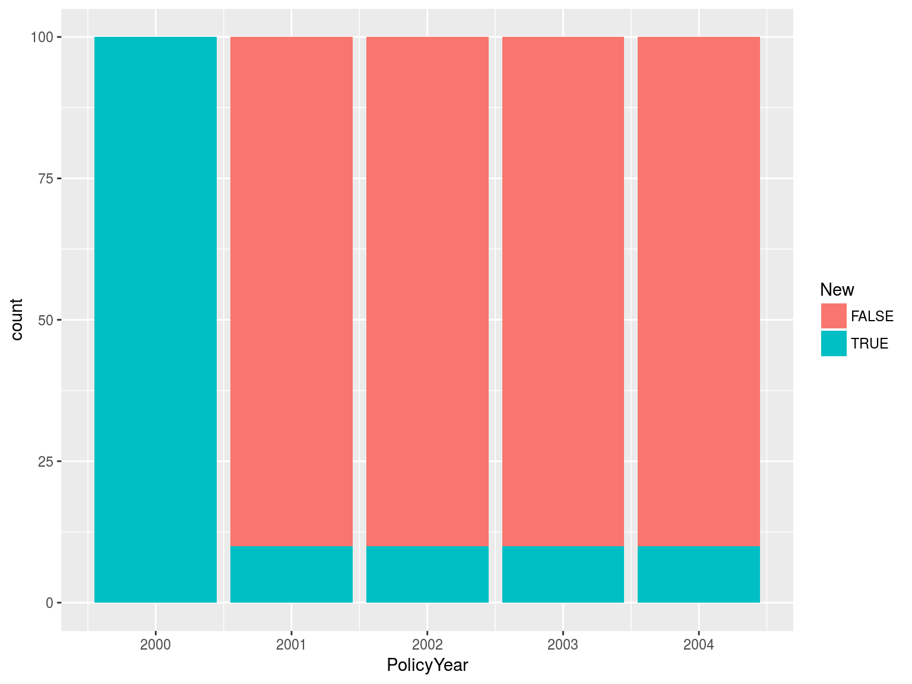
dfPolicies <- SimulatePolicies(N = 50
, NumYears = 10
, Retention = 0.9
, Growth = 0.2)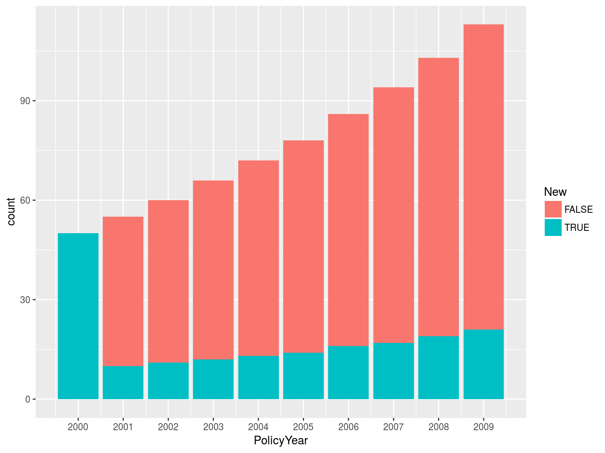
dfPolicies <- SimulatePolicies(N = 100
, NumYears = 10
, Retention = 0.8
, Growth = 0.1)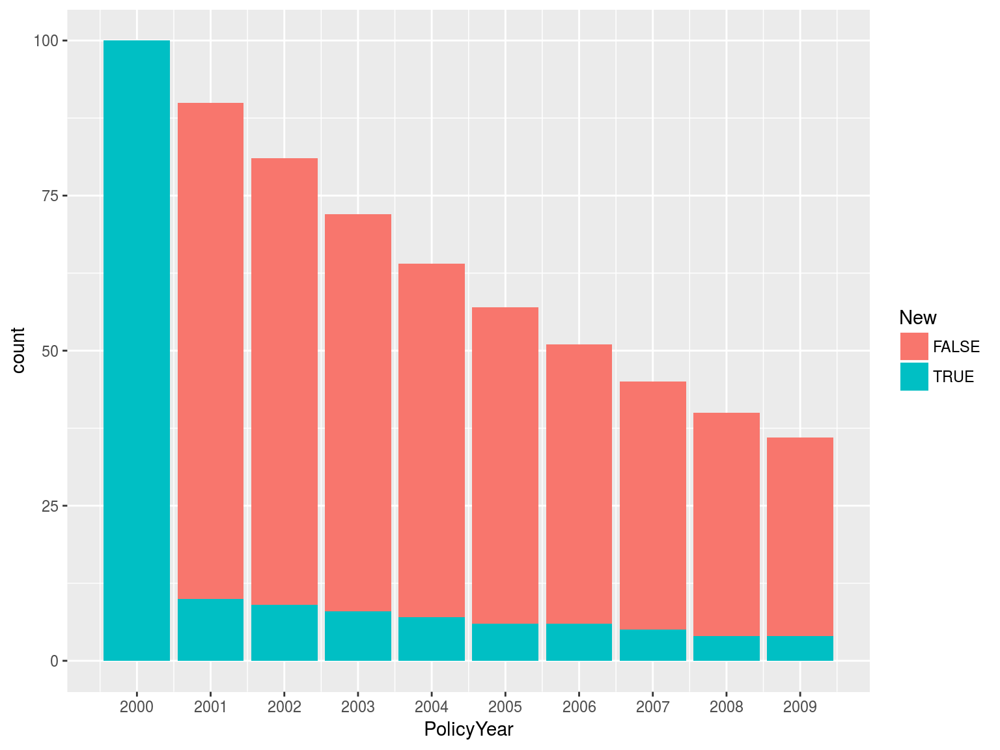
dfPolicies <- SimulatePolicies(N = 100
, NumYears = 10
, Retention = 0.0
, Growth = 1.0)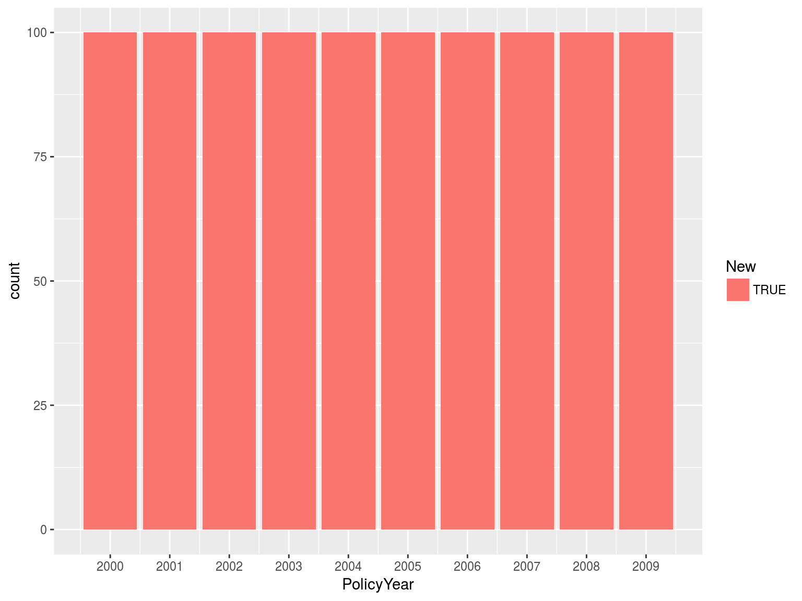
Note these differences are deterministic
dfPolicies <- SimulatePolicies(
N = 100
, NumYears = 10
, Retention = seq(length.out = 9, from = 0.95, to = 0.5)
, Growth = seq(length.out = 9, from = 0.25, to = 0.05))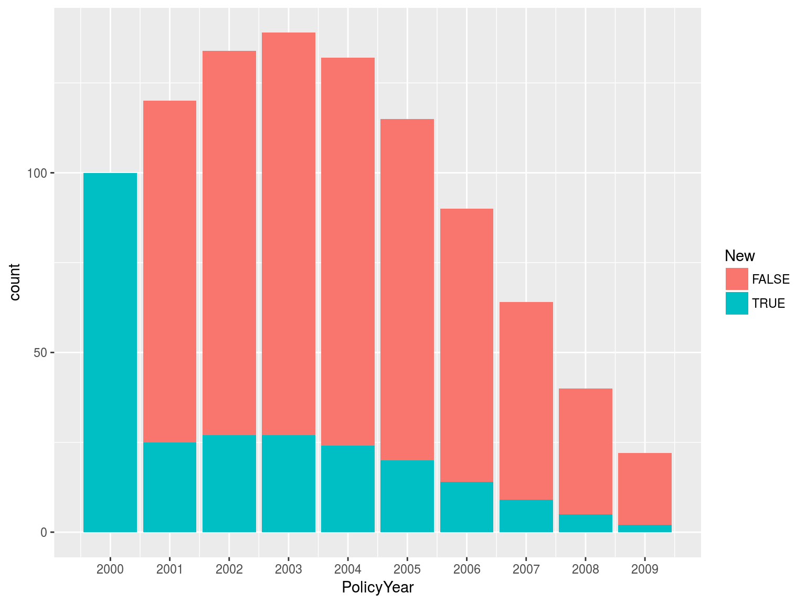
dfPolicies <- SimulatePolicies(N = 100
, NumYears = 10
, Retention = 0.9
, Growth = runif(9, .05, .35))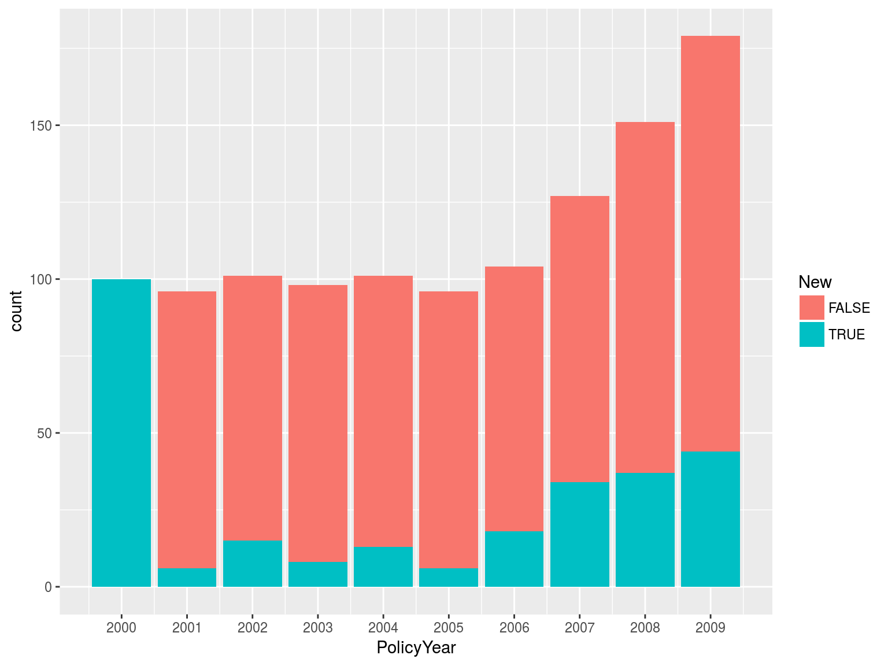
Used to add descriptive names for the set of policies. Theses may then be bound into a single data frame.
Below, we simulate decline in one state and rapid growth in another.
dfGL_CA <- SimulatePolicies(
N = 500, NumYears = 5, Retention = 0.75, Growth = .01
, AdditionalColumns = list(Line = "GL", State = "CA"))
dfGL_NY <- SimulatePolicies(
N = 50, NumYears = 5, Retention = 0.9, Growth = .5
, AdditionalColumns = list(Line = "GL", State = "NY"))
dfGL <- dplyr::bind_rows(dfGL_CA, dfGL_NY)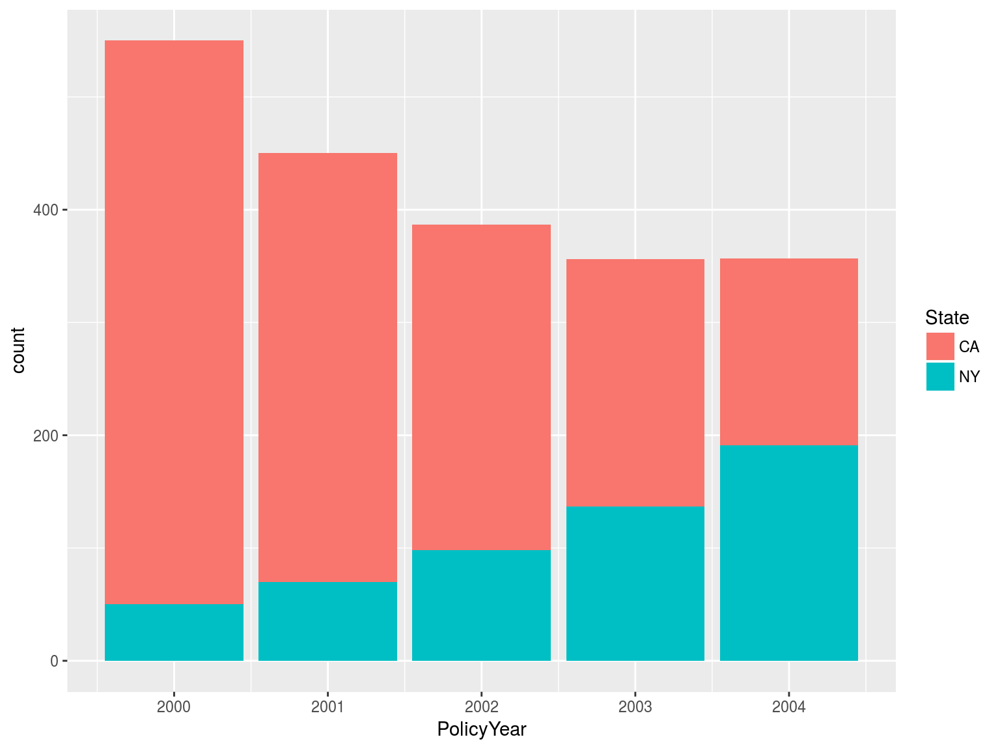
set.seed(12345)
dfPolicy <- SimulatePolicies(2, 2001:2005)| PolicyEffectiveDate | PolicyExpirationDate | Exposure | PolicyholderID |
|---|---|---|---|
| 2001-09-21 | 2002-09-20 | 1 | 1 |
| 2001-11-16 | 2002-11-15 | 1 | 2 |
| 2002-11-16 | 2003-11-15 | 1 | 2 |
| 2002-09-21 | 2003-09-20 | 1 | 1 |
| 2003-11-16 | 2004-11-15 | 1 | 2 |
dfClaimTransactions <- ClaimsByWaitTime(
dfPolicy
, ClaimFrequency = FixedHelper(2)
, PaymentFrequency = FixedHelper(3)
, OccurrenceWait = FixedHelper(10)
, ReportWait = FixedHelper(5)
, PayWait = FixedHelper(5)
, PaySeverity = FixedHelper(50))| ClaimID | OccurrenceDate | ReportDate | PaymentDate | PaymentAmount |
|---|---|---|---|---|
| 1 | 2001-10-01 | 2001-10-06 | 2001-10-11 | 50 |
| 1 | 2001-10-01 | 2001-10-06 | 2001-10-16 | 50 |
| 1 | 2001-10-01 | 2001-10-06 | 2001-10-21 | 50 |
| 2 | 2001-10-01 | 2001-10-06 | 2001-10-11 | 50 |
| 2 | 2001-10-01 | 2001-10-06 | 2001-10-16 | 50 |
| 2 | 2001-10-01 | 2001-10-06 | 2001-10-21 | 50 |
| 3 | 2001-11-26 | 2001-12-01 | 2001-12-06 | 50 |
| 3 | 2001-11-26 | 2001-12-01 | 2001-12-11 | 50 |
| 3 | 2001-11-26 | 2001-12-01 | 2001-12-16 | 50 |
Some columns have been removed
dfClaimTransactions <- ClaimsByWaitTime(
dfPolicy
, ClaimFrequency = FixedHelper(2)
, PaymentFrequency = PoissonHelper(2)
, OccurrenceWait = PoissonHelper(10)
, ReportWait = PoissonHelper(5)
, PayWait = PoissonHelper(5)
, PaySeverity = LognormalHelper(log(50), 0.5*log(50)))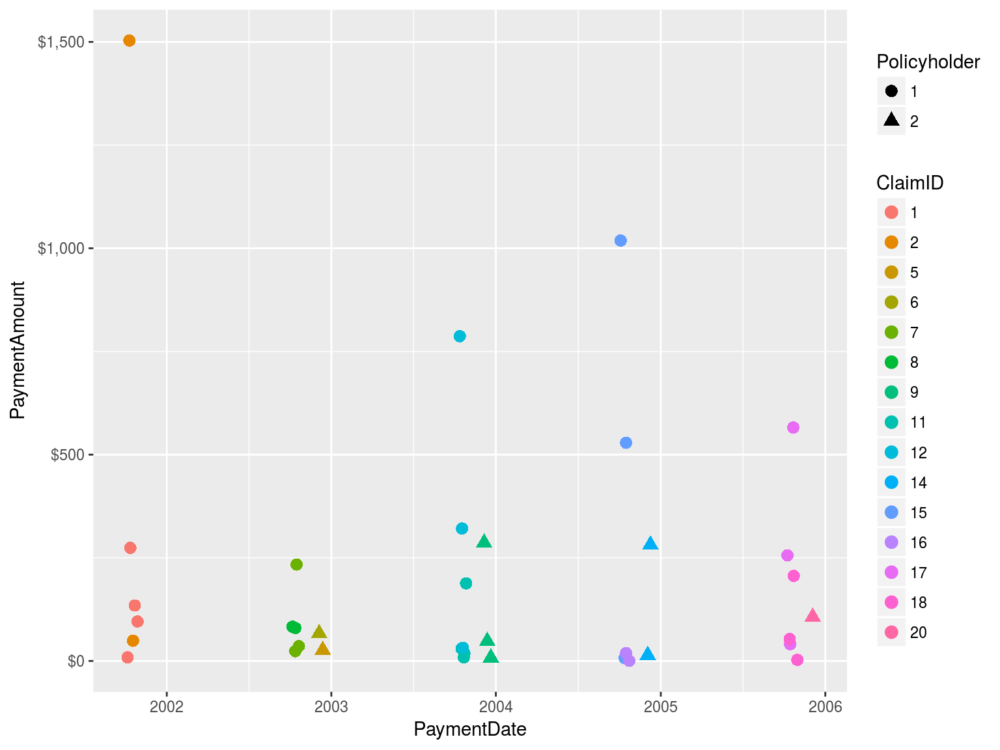
dfPolicy <- SimulatePolicies(1000, 2001:2005)
dfClaimTransactions <- ClaimsByWaitTime(
dfPolicy
, ClaimFrequency = PoissonHelper(2 * seq.int(5))
, PaymentFrequency = PoissonHelper(2)
, OccurrenceWait = PoissonHelper(180)
, ReportWait = PoissonHelper(90)
, PayWait = PoissonHelper(45)
, PaySeverity = LognormalHelper(log(50), 0.5*log(50))) %>%
mutate(PolicyYear = lubridate::year(PolicyEffectiveDate))
dfPolicyClaims <- dfClaimTransactions %>%
mutate(NumClaims = ifelse(is.na(ClaimID), 0, 1)) %>%
group_by(PolicyholderID, PolicyYear) %>%
summarize(NumClaims = sum(NumClaims))lapply(split(dfPolicyClaims, dfPolicyClaims$PolicyYear), function(x){
summary(x$NumClaims)
})
## $`2001`
## Min. 1st Qu. Median Mean 3rd Qu. Max.
## 0.000 2.000 4.000 4.259 6.000 20.000
##
## $`2002`
## Min. 1st Qu. Median Mean 3rd Qu. Max.
## 0.00 1.00 4.00 4.12 6.00 16.00
##
## $`2003`
## Min. 1st Qu. Median Mean 3rd Qu. Max.
## 0.000 2.000 4.000 4.358 6.000 24.000
##
## $`2004`
## Min. 1st Qu. Median Mean 3rd Qu. Max.
## 0.000 1.000 3.000 4.186 6.000 19.000
##
## $`2005`
## Min. 1st Qu. Median Mean 3rd Qu. Max.
## 0.000 2.000 4.000 4.386 7.000 24.000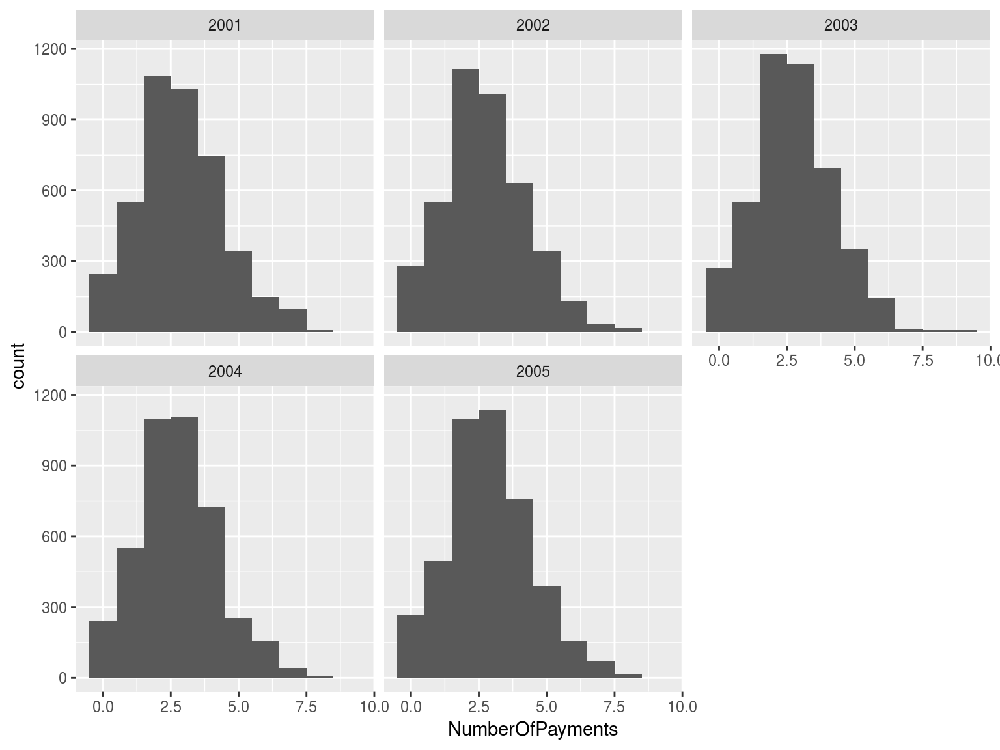
set.seed(12345)
dfPolicy <- SimulatePolicies(2, 2001:2004)
dfIBNYR_Fixed <- ClaimsByFirstReport(
dfPolicy
, Frequency = FixedHelper(4:1)
, PaymentSeverity = FixedHelper(rep(250, 4))
, Lags = 1:4)| PolicyholderID | PolicyEffectiveDate | ClaimID | Lag | PaymentAmount |
|---|---|---|---|---|
| 1 | 2001-09-21 | 1 | 1 | 250 |
| 1 | 2001-09-21 | 2 | 1 | 250 |
| 1 | 2001-09-21 | 3 | 1 | 250 |
| 1 | 2001-09-21 | 4 | 1 | 250 |
| 1 | 2001-09-21 | 33 | 2 | 250 |
| 1 | 2001-09-21 | 34 | 2 | 250 |
| 1 | 2001-09-21 | 35 | 2 | 250 |
| 1 | 2001-09-21 | 57 | 3 | 250 |
| 1 | 2001-09-21 | 58 | 3 | 250 |
| 1 | 2001-09-21 | 73 | 4 | 250 |
| PolicyholderID | PolicyYear | 1 | 2 | 3 | 4 |
|---|---|---|---|---|---|
| 1 | 2001 | 4 | 3 | 2 | 1 |
| 1 | 2002 | 4 | 3 | 2 | 1 |
| 1 | 2003 | 4 | 3 | 2 | 1 |
| 1 | 2004 | 4 | 3 | 2 | 1 |
| 2 | 2001 | 4 | 3 | 2 | 1 |
| 2 | 2002 | 4 | 3 | 2 | 1 |
| 2 | 2003 | 4 | 3 | 2 | 1 |
| 2 | 2004 | 4 | 3 | 2 | 1 |
| PolicyholderID | PolicyYear | 1 | 2 | 3 | 4 |
|---|---|---|---|---|---|
| 1 | 2001 | 4 | 3 | 2 | 1 |
| 1 | 2002 | 4 | 3 | 2 | |
| 1 | 2003 | 4 | 3 | ||
| 1 | 2004 | 4 | |||
| 2 | 2001 | 4 | 3 | 2 | 1 |
| 2 | 2002 | 4 | 3 | 2 | |
| 2 | 2003 | 4 | 3 | ||
| 2 | 2004 | 4 |
| PolicyholderID | PolicyYear | 1 | 2 | 3 | 4 |
|---|---|---|---|---|---|
| 1 | 2001 | 1000 | 750 | 500 | 250 |
| 1 | 2002 | 1000 | 750 | 500 | |
| 1 | 2003 | 1000 | 750 | ||
| 1 | 2004 | 1000 | |||
| 2 | 2001 | 1000 | 750 | 500 | 250 |
| 2 | 2002 | 1000 | 750 | 500 | |
| 2 | 2003 | 1000 | 750 | ||
| 2 | 2004 | 1000 |
ClaimsByLinkRatio takes a data frame of claims by Lag and develops them as appropriate.
dfClaimsFixed <- ClaimsByLinkRatio(
dfIBNYR_Fixed
, Links = FixedHelper(c(2, 1.5, 1.25))
, Lags = 1:4)Note that we now have more than one observation for each claim
| PolicyholderID | PolicyEffectiveDate | ClaimID | Lag | PaymentAmount |
|---|---|---|---|---|
| 1 | 2001-09-21 | 1 | 1 | 250.0 |
| 1 | 2001-09-21 | 1 | 2 | 500.0 |
| 1 | 2001-09-21 | 1 | 3 | 750.0 |
| 1 | 2001-09-21 | 1 | 4 | 937.5 |
dfIBNYR_Variable <- ClaimsByFirstReport(
dfPolicy
, Frequency = PoissonHelper(4:1)
, PaymentSeverity = GammaHelper(rep(1500, 4), rep(5,4))
, Lags = 1:4)
dfClaimsVariable <- ClaimsByLinkRatio(
dfIBNYR_Variable
, Links = GammaHelper(c(10, 15, 20), c(5, 10, 18))
, Lags = 1:4)You’re pretty much done, unless you want to aggregate the results
dfAgg <- dfClaimsVariable %>%
mutate(PolicyYear = lubridate::year(PolicyEffectiveDate)) %>%
dplyr::filter(PolicyYear + Lag - 1 <= 2004) %>%
group_by(PolicyYear, Lag) %>%
summarise(Paid = sum(PaymentAmount)
, ClaimCount = n())| PolicyYear | Lag | Paid | ClaimCount |
|---|---|---|---|
| 2001 | 1 | 4194.4898 | 14 |
| 2001 | 2 | 12812.4488 | 24 |
| 2001 | 3 | 19544.7604 | 28 |
| 2001 | 4 | 20718.3283 | 29 |
| 2002 | 1 | 894.7109 | 3 |
| 2002 | 2 | 3893.3006 | 7 |
| 2002 | 3 | 7734.5361 | 13 |
| 2003 | 1 | 1529.1519 | 5 |
| 2003 | 2 | 4475.5000 | 12 |
| 2004 | 1 | 2078.8361 | 7 |
We need to impose an evaluation date structure on the data
first_eval <- min(dfClaimTransactions$PolicyEffectiveDate)
lubridate::month(first_eval) <- 12
lubridate::day(first_eval) <- 31
last_eval <- max(dfClaimTransactions$PaymentDate, na.rm = TRUE)
lubridate::month(last_eval) <- 12
lubridate::day(last_eval) <- 31
evalDates <- seq.Date(from = first_eval, to = last_eval, by = "year")
evalDates
## [1] "2001-12-31" "2002-12-31" "2003-12-31" "2004-12-31" "2005-12-31"
## [6] "2006-12-31" "2007-12-31"Just a bit of jiu-jitsu
ComposeDiagonal <- function(df, eval_date){
df <- df %>%
dplyr::filter(PaymentDate <= eval_date) %>%
mutate(PolicyYear = lubridate::year(PolicyEffectiveDate)
, Lag = lubridate::year(eval_date) - PolicyYear + 1) %>%
group_by(PolicyYear, Lag) %>%
summarise(PaymentAmount = sum(PaymentAmount, na.rm = TRUE))
}
dfTriangle <- lapply(evalDates, function(x){
ComposeDiagonal(dfClaimTransactions, x)
})
dfTriangle <- do.call(rbind, dfTriangle)| PolicyYear | Lag | PaymentAmount |
|---|---|---|
| 2001 | 1 | 66464.06 |
| 2001 | 2 | 1198941.36 |
| 2001 | 3 | 1242390.00 |
| 2001 | 4 | 1242390.00 |
| 2001 | 5 | 1242390.00 |
| 2001 | 6 | 1242390.00 |
| 2001 | 7 | 1242390.00 |
Why are you creating triangles?
Individual claim data contains all of the features that you need to build a model.
Create a chain ladder by forming cumulative amounts and lagging
dfChainLadder <- dfClaimsVariable %>%
arrange(ClaimID, Lag) %>%
group_by(ClaimID) %>%
mutate(CumulativePaid = cumsum(PaymentAmount)
, PriorCumulative = dplyr::lag(CumulativePaid))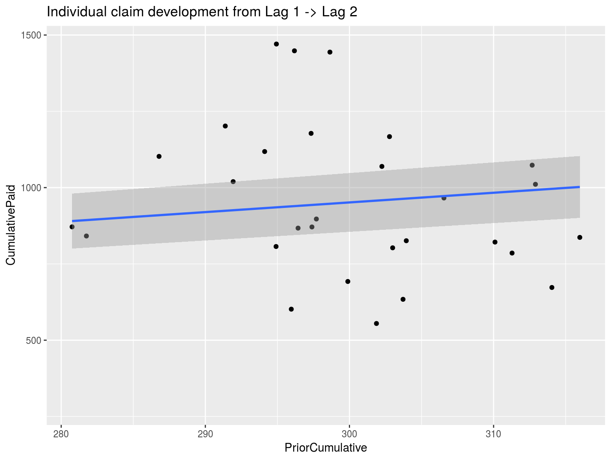
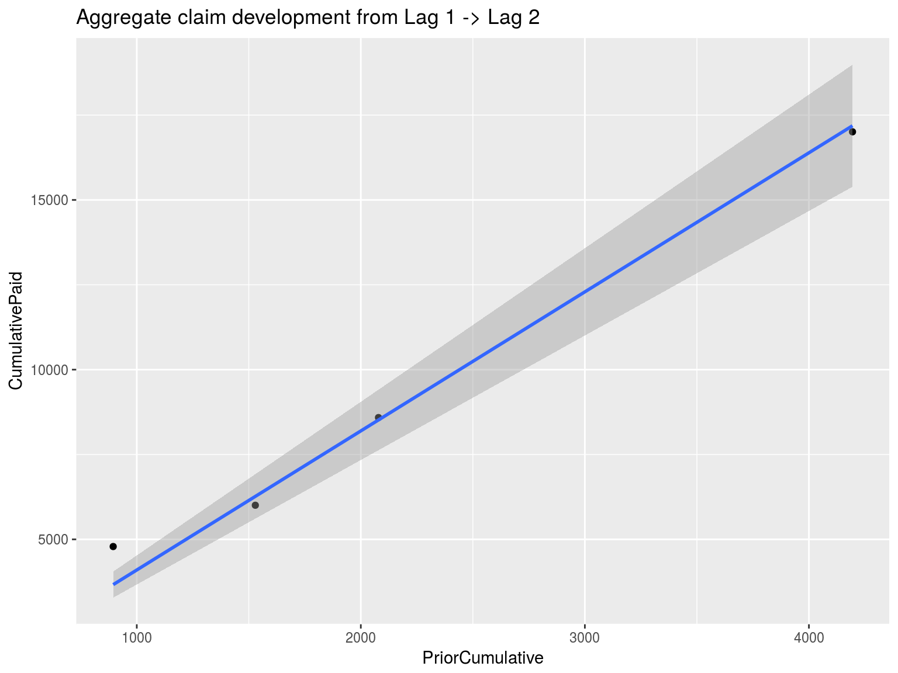
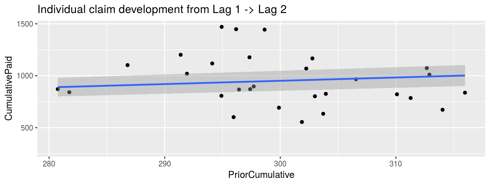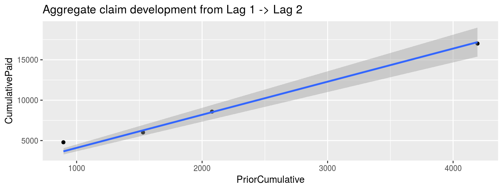
This slide will be complete by the time I present.
imaginator can help you contemplate scenariosThe source code for these slides may be found here: https://github.com/PirateGrunt/clrs_2017_imaginator
Richard L. Vaughan, FSA, FCAS. 1998. “Some Extensions of J. N. Stanard’s Simulation Model for Loss Reserving.” https://www.casact.org/pubs/forum/98fforum/vaughn.pdf.
Stanard, James N. 1985. “A Simulation Test of Prediction Errors of Loss Reserve Estimation Techniques.” https://www.casact.org/pubs/proceed/proceed85/85124.pdf.
Venter, Gary. 1998. “Testing the Assumptions of Age-to-Age Factors.” https://www.casact.org/pubs/proceed/proceed98/980807.pdf.